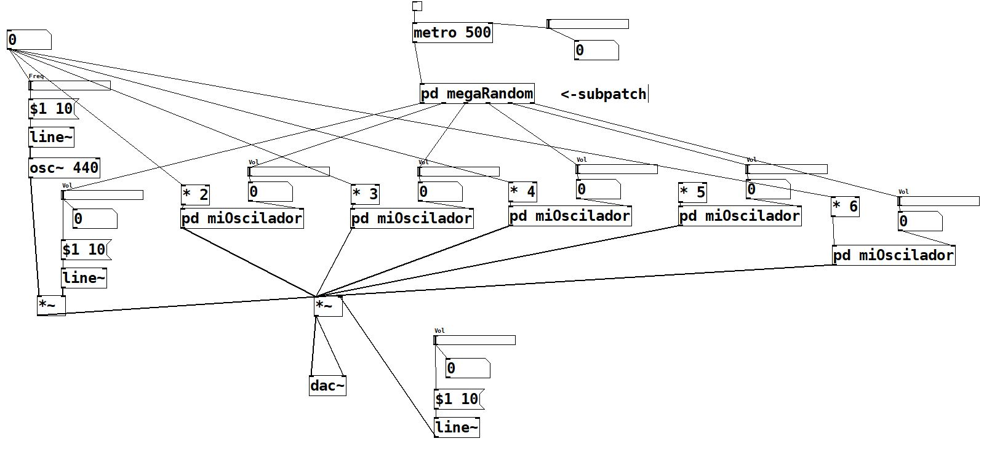
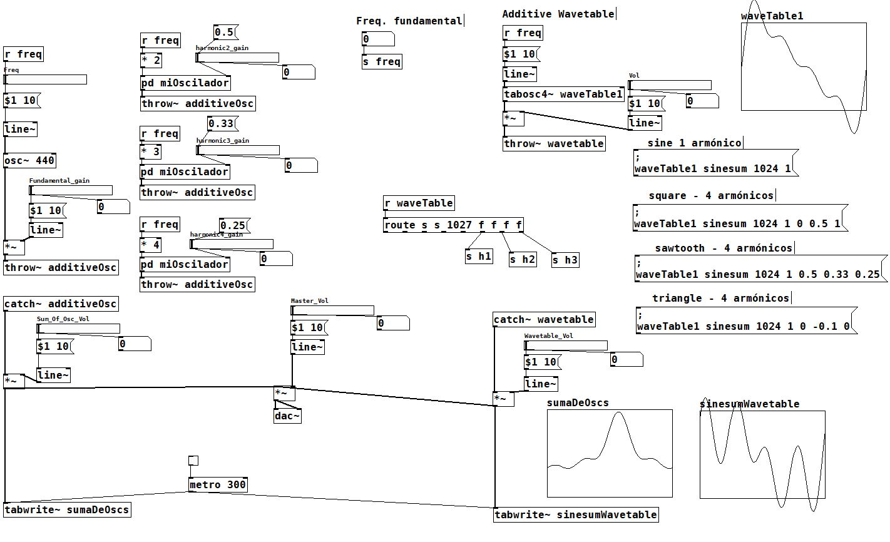
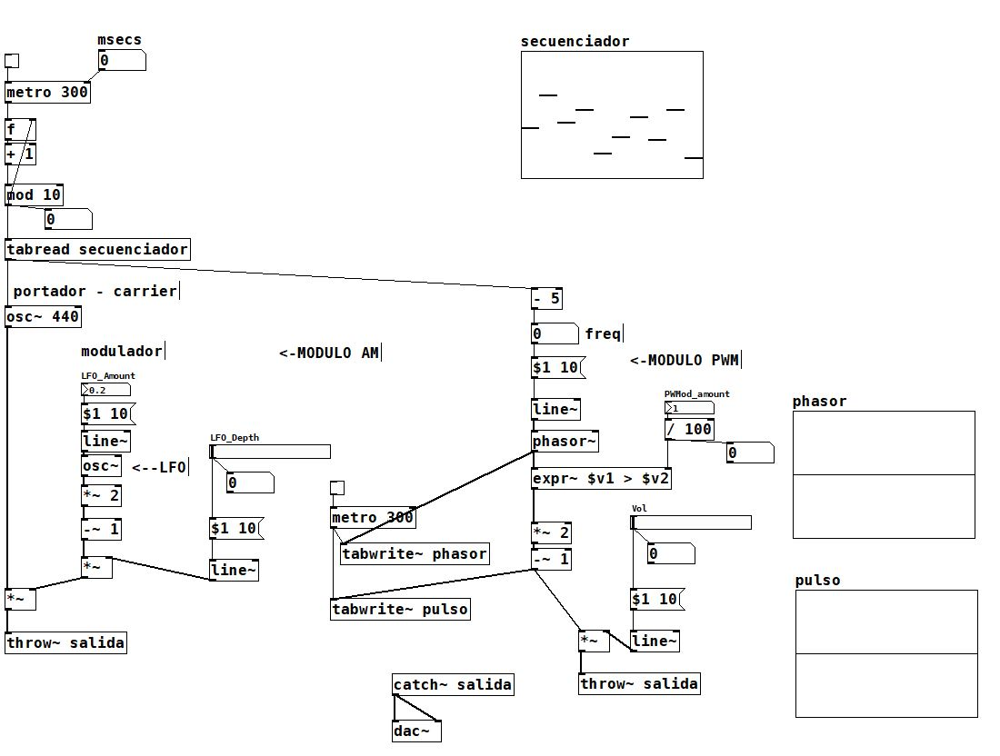
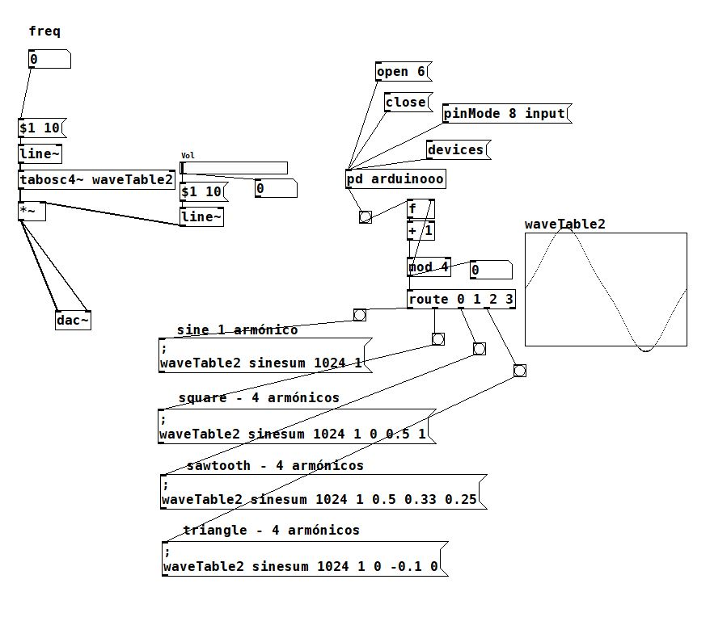

Starting from basic techniques of creation, design and interactive manipulation of digitized sound,
different areas of audio signal processing, performance and human-machine interaction will be further explored in order to
be incorporated into musical and artistic performances.
The different experiments can also be seen as simple recreational learning tools,
with the aim of pushing forward the limits of music and sound technologies.
All the different experiments have been implemented using Pure Data (visual programming language) in order to create and
process the different sounds and audio, while
Arduino has been used to create physical interfaces to control and manipulate Pure Data and physically interact with different audio and sounds.
Additive synthesis  Additive Wave Table  Am Modulation  Pulse Way with Arduino 
If you want to know more about the Creation of Sound, check out
this link.